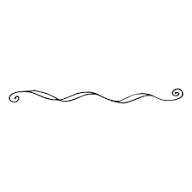

The image will float to the right of the text.
HI! My name is Aliya, and this is my personal website! I'm currently in grade 10, and I love drawing and writing,and apparenlty now coding too. I love anime , my top 10 include Tokyo revengers, Jojo bizarre adventures and Jujutsu Kaisen. People usually say I'm a really friendly and radiant. And one thing people always say is that I have a way with words! But I believe that everyone has their own perception of a person. And despite always being described as 'summery' and "sunny" I actualy love the opposite, I love the moon and wintersssss.


